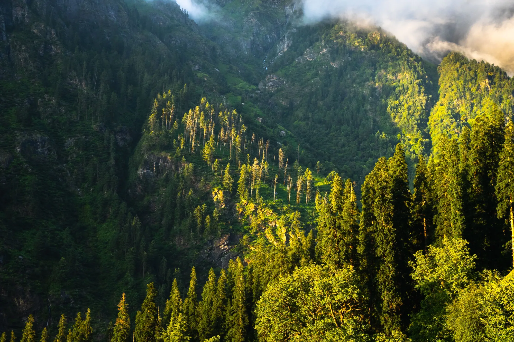
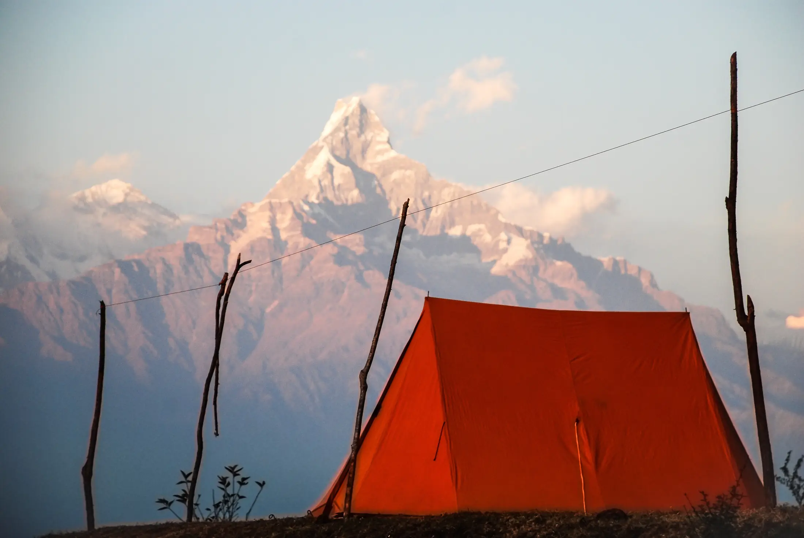

- Triund is an easy 2-day trek from McLeodganj: about 9 km up to a ridge camp at 2,875 m, then back down.
- Spring (March to June) and autumn (September to November) are the usual windows; winter orders can close the trail above 3,000 m.
- Operators list it from about ₹1,000 to ₹6,000 depending on what is included. Entry is paid at the forest check post, and ridge camping is capped each night.
Triund is a short, easy trek in Himachal Pradesh: you climb about 9 km from McLeodganj to a grassy ridge at 2,875 m under the Dhauladhar range, camp, and walk down the next day. It suits first-time trekkers and weekend travellers, as long as they respect the climb and the weather.
Who is the Triund trek for?
Bikat Adventures rates Triund as easy. It is a good first overnight trek if you can walk uphill for three to five hours with a small bag. It is less good if you want solitude: the ridge is popular, and the forest department limits how many people and tents may stay there each night (see permits below).
Our Triund page has the 3D route if you want to see how steep the last stretch is before you go. For other gentle options see easy treks in India.

Triund trek itinerary
This follows Bikat Adventures' two-day plan from McLeodganj. Distances and times are theirs; yours will vary with pace and weather.
| Day | Route | Distance | Time | Sleep at |
|---|---|---|---|---|
| 1 | McLeodganj (1,785 m) → Galu Devi temple → 22 curves → Triund | 9 km | 3 to 5 h | Tents, Triund 2,875 m |
| 2 | Triund → Snowline Cafe → Laka (3,300 m) → back to McLeodganj | 19 km | 7 to 8 h | – |
Day 1 gains about 1,090 m, mostly on a trail that starts tiring and ends in the steep "22 curves". Day 2 is longer than it looks: the climb to Snowline Cafe is about 2 km, Laka is about 3 km beyond, and the walk down takes 4 to 5 hours. Bikat expects groups back by about 6 p.m. Laka is a bonus on day 2, not the main goal. Read how to read a trek's altitude gain to judge a day like this.
Best time for Triund
Different operators name slightly different windows: Himalaya Shelter lists March to June and September to December, Himalayan Dream Treks says best March to June and September to November. Reasoning for the months:
- March to June: mild days. Treks and Trails still reports 7 to 10 °C nights in May and June, so bring a jacket. See treks in April and May.
- September to November: after the rains, with cold nights (about 4 °C in October and just below 0 °C in November, per Treks and Trails). See treks in October.
- December to February: nights of -5 to -7 °C. Kangra's winter orders can close the trail above 3,000 m, including Snowline Cafe and Laka, and Triund itself can close on bad-weather days.
- Monsoon: not a listed best window; slippery trail and cloud. Expect to need a raincoat.

How to reach the Triund trailhead
The nearest town is Dharamshala, and McLeodganj is about 5 km above it by auto or taxi (Bikat). Cars stop at the Galu Devi temple, about 6 km by road from McLeodganj and roughly 20 minutes by taxi. You can also walk about 3.5 km from McLeodganj via Dharamkot (Treks and Trails). The last ATM is in McLeodganj, so draw cash before you start.
Triund trek cost
We found five operators with a Triund price on their own pages in October 2026. Prices change, and they cover different things, so compare what is included:
| Operator (own page) | Base price | Notes on that page |
|---|---|---|
| Thrillophilia | from ₹999 | ex-Bhagsunag; camp at Leta, ₹1,499 at Triund top; entry fee extra |
| Himalayan Dream Treks | ₹3,000 | ex-McLeodganj, plus GST |
| Himalayan Hikers | ₹3,500 | ex-McLeodganj, plus GST, insurance extra |
| Himalaya Shelter | ₹5,000 | plus GST |
| Treks and Trails India | ₹5,999 | 5 days ex-Delhi, plus GST |
Bikat lists Triund only as do-it-yourself, with no package price. If you go independently, Trekup India reports tents at Triund at about ₹600 for two with sleeping bags, and a forest rest house at ₹600 to ₹800 a night booked in Dharamshala. For the wider picture see how much a trek in India costs.
Permits, entry fee and limits
You register at the Gallu forest check post and show photo ID. Treks and Trails reports an entry fee of ₹100 a day at the last reported rate, and a limit of 40 people and 20 tents on the ridge each night. These rules change, so confirm at the check post. There is nothing we could verify that differs for foreign trekkers. More on trek permits in India.
What to pack for Triund
- Trek shoes with grip (the 22 curves are rocky), a warm jacket or fleece, cap and gloves for the cold season.
- At least 2 litres of water, because sources are few (Himalayan Dream Treks).
- Head torch, power bank, sunscreen, a garbage bag for your waste.
The full list is in our Himalayan trek packing list. Pack out what you carry in: see leave no trace.
Difficulty, safety and altitude
Triund peaks well below 3,000 m on the ridge, so altitude sickness is less likely, but it is not impossible at the higher Laka stretch. Headache, nausea or dizziness that gets worse means going down; read altitude sickness on treks. The real everyday risks are slippery rock, sudden weather change and cold nights. Start early, tell someone your plan, and turn back if cloud or rain sets in. This is general information, not medical advice; talk to a doctor if you have a health condition.
Sources
- Bikat Adventures: Triund itinerary
- Treks and Trails India: McLeodganj Triund trek
- Himalaya Shelter: Triund trek
- Himalayan Dream Treks: Triund
- Himalayan Hikers: Triund trek
- Thrillophilia: Triund trek
- Trekup India: Triund trek guide
Quick questions
Is Triund good for beginners?
Yes. Bikat grades it easy, and many first-timers do it. The hard part is the climb of about 1,100 m in 9 km on day 1, so go slowly and carry water.
Can I do Triund in one day?
The route is about 9 km each way (Bikat), so it is a long but possible day for a fit walker. The standard plans sleep at the ridge, so check current rules on camping and entry before you decide.
Is Triund open in winter?
Not always. Kangra's winter orders have closed the trail above 3,000 m, and Triund can shut on bad-weather days, according to Treks and Trails. Ask locally before travelling.
How cold is Triund at night?
Treks and Trails reports about 4 °C in October, just below 0 °C in November and -5 to -7 °C from December to February. Even May and June nights are 7 to 10 °C.